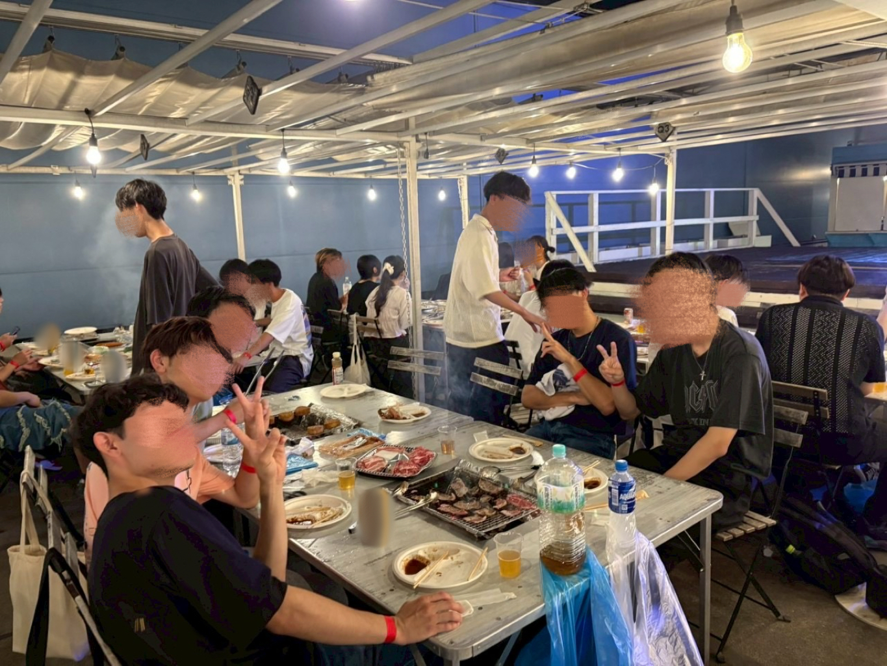
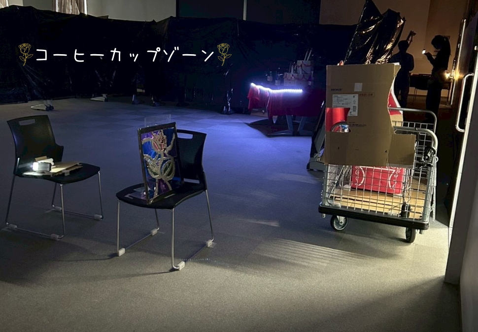
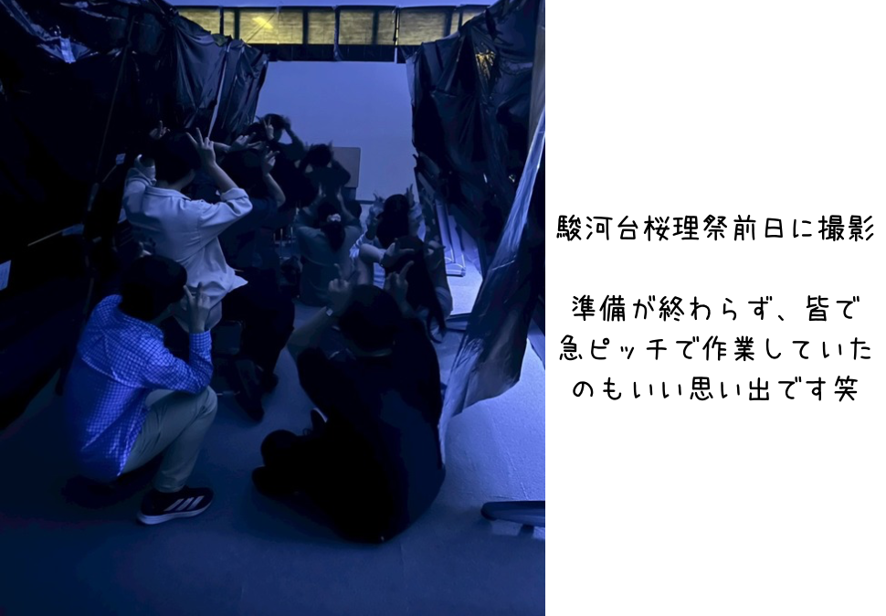
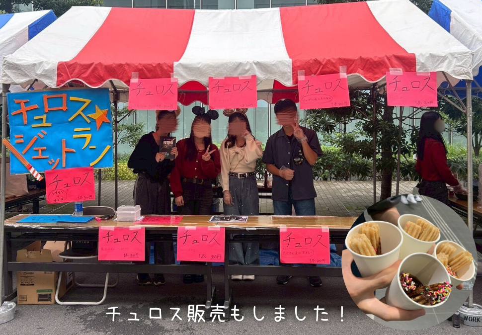
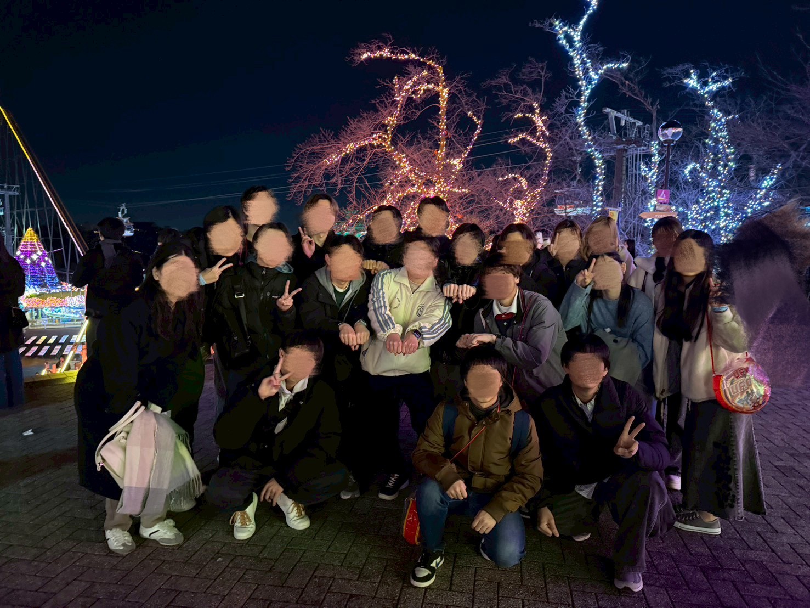
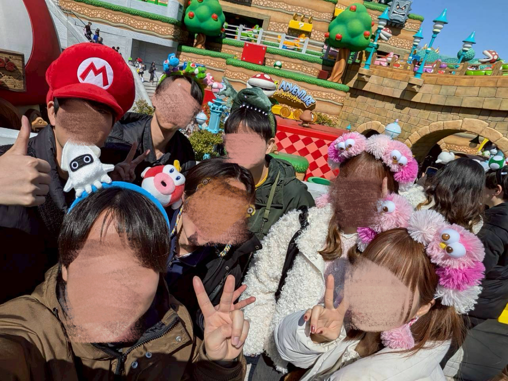

2025年活動紹介
4月

新規部員に向けた説明会
このサークルの普段の活動の様子や魅力などをたくさん紹介させていただきました！
5月

・新入生歓迎会
食事をしながらサークルのいろんな方と話していただきました。この機会に、既に在籍している先輩部員とつながりやすくなります！

・交流会
さらに親睦を深めることを目的として開催しました。ボードゲームなどを通してた交流していただきました！
勉強会
みんなで集まって試験勉強をしました。分からないところは直接先輩に聞くこともできますよ！
8月

スモールワールズ
小さな世界観の演出の仕方を学びました。

BBQ
夏といえばBBQ！たくさん笑って、みんなでおいしいお肉をいただきました♪
9月

現地調査（東京ディズニーシー）
3班に分かれて、各班それぞれ気になるスポットを回りました。遊びつつも気になったことを調べ、後日調査書をまとめました。

手持ち花火
夏といえば花火！9月末に開催したということもあり、夏の名残を感じつつ楽しみました。
10月






文化祭（駿河台桜理祭）
現地調査を活かしたオリジナルアトラクションを制作しました！1ヶ月以上の準備期間を経て3つのゾーンを完成させました。またチュロス販売もしました。

ハロウィンパーティー
みんなでお菓子を持ち寄り、カードゲームや映画鑑賞をしました！
12月


現地調査（よみうりランド）
このサークルは遊園地にも行きます！よみうりランドはアトラクションだけでなく、イルミネーションやＨＡＮＡ・ＢＩＹＯＲＩといった幻想的な空間があり、この魅せ方も大きな学びになりました。
2月

現地調査（東京ディズニーシー）
この時も3班に分かれて、各班気になるアトラクションやショーを回りました。現地調査で得たことは学祭などに応用します！
3月


合宿（ＵＳＪ）
2025年度最後の現地調査はＵＳＪ！関西にも足を運びました。ＵＳＪはアニメやゲームの世界観が特徴的でした。2泊3日の合宿なので、京都や大阪の観光もしました♪

送別会
卒業される4年生の方に今までの感謝と応援の気持ちを伝えました。